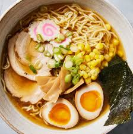

Ramen Recipe

Ramen is a popular Japanese noodle soup dish that has taken the world by storm. It consists of Chinese-style wheat noodles served in a meat- or fish-based broth, often flavored with soy sauce or miso, and uses toppings such as sliced pork, nori, menma, and scallions.
Ingredients
- 2 servings of ramen noodles
- 4 cups chicken or vegetable broth
- 2 tablespoons soy sauce
- 1 tablespoon miso paste
- 1/2 cup sliced green onions
- Soft-boiled eggs (optional)
- Nori (seaweed) sheets for garnish
Instructions
- In a pot, bring the broth to a simmer over medium heat.
- Add soy sauce and miso paste, stirring until dissolved.
- Cook ramen noodles according to package instructions, then drain.
- Divide noodles into bowls and ladle hot broth over them.
- Top with green onions, soft-boiled eggs, and nori.